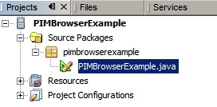
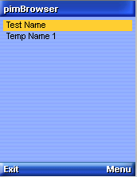
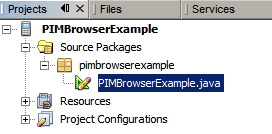
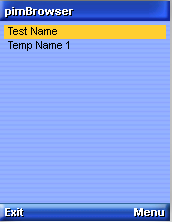
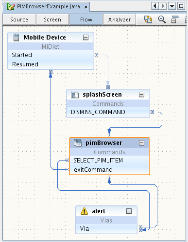

Окно "Проекты" должно выглядеть примерно так:

В эмуляторе отображается компонент заставки, а затем обозреватель PIM, как показано на рисунке.



Visual Mobile Designer (VMD) — это графический интерфейс NetBeans Mobility, который позволяет разрабатывать мобильные приложения, используя функцию перетаскивания компонентов. VMD позволяет определять структуру приложений и создавать собственный интерфейс пользователя с помощью компонентов среды IDE или с помощью самостоятельно созданных компонентов. VMD содержит различные стандартные компоненты интерфейса пользователя, которые используются для создания приложений (например списки, предупреждения, формы и изображения). В него также входят особые компоненты, которые упрощают создание более сложных элементов (экранов ожидания, заставок, элементов таблицы и др.)
Обозреватель PIM — особый компонент, который предоставляет доступ к функциям стандартных мобильных устройств (календарь, адресная книга, список задач). Компонент обозревателя PIM обеспечивает приложениям Java доступ к локальным базам личных данных. Компонент использует интерфейс API PIM (Personal Information Management), который входит в дополнительные пакеты JPDA спецификации JSR-75 для платформы Java ME. Так как JSR-75 не входит в спецификацию MIDP 2.0, он по определению является особым компонентом и может использоваться только на устройствах с поддержкой JSR-75.
В этом учебном курсе показано использование компонента "Обозреватель PIM" в мобильном приложении на устройствах с поддержкой JSR-75. Здесь демонстрируются основные функции: просмотр содержимого базы контактных данных устройства, календаря или списка дел. Помимо обозревателя PIM необходимо также использовать три других компонента: заставку, текстовое поле и предупреждение.
Содержание

Для работы с этим учебным курсом требуется следующее программное обеспечение и ресурсы.
| Программное обеспечение или ресурс | Требуемая версия |
|---|---|
| Среда IDE NetBeans с Java ME | Версия 6.9 и более поздняя |
| Комплект для разработки приложений на языке Java (JDK) | Версии 6 и 7 |
При отсутствии опыта разработки приложений для NetBeans Mobility перед продолжением работы необходимо ознакомиться с документом Краткое руководство по NetBeans Java ME MIDP.
Перед тем как приступить к учебному курсу, можно ознакомиться с окончательным результатом этой работы.
Для установки приложения PIMBrowserExample выполните следующие действия:


После ознакомления с обозревателем PIM вернемся к началу и создадим данное приложение. Для создания приложения необходимо выполнить указанные ниже действия.
PIMBrowserExample. В поле "Project Location" укажите локальный каталог. Теперь мы будем называть этот каталог $PROJECTHOME. Примечание. Папка проекта содержит все исходные файлы и метаданные проекта (например, сценарий Ant для этого проекта).
PIMBrowserExample, затем выберите Файл > "Создать файл" (CTRL+N). В области "Категории" выберите "Java". В разделе "File Types" выберите "Java Package". Нажмите кнопку "Далее". pimbrowserexample. Нажмите кнопку "Готово".
pimbrowserexample, затем выберите Файл > Создать файл (CTRL+N). В разделе "Categories" выберите "MIDP". В разделе "File Types" выберите "Visual MIDlet". Нажмите кнопку "Далее".
PIMBrowserExample. Нажмите кнопку "Готово". В приложении Flow Designer щелкните команду Запущено элемента "Мобильное устройство" и перетащите его в компонент splashScreen. Аналогичным образом соедините другие компоненты, как показано на следующем рисунке.

Скопируйте пример контакта в папку javame-sdk в каталоге $JAVAME-SDKHOME/3.0/work/0/appdb/PIM/contacts/Contacts/.
По умолчанию в этой папке содержатся три следующих файла.
Для запуска главного проекта нажмите клавишу F6 или выберите меню Выполнить > Выполнить главный проект.
Среда IDE NetBeans предоставляет документацию Javadoc интерфейса API для компонента PIMBrowser, а также для других компонентов, которые можно использовать в VMD. Для ознакомления с документацией Javadocs для компонента PIMBrowser выполните следующие действия.
 ) во всплывающем окне для просмотра подробной информации о компоненте PIMBrowser в вашем веб-обозревателе.
) во всплывающем окне для просмотра подробной информации о компоненте PIMBrowser в вашем веб-обозревателе.